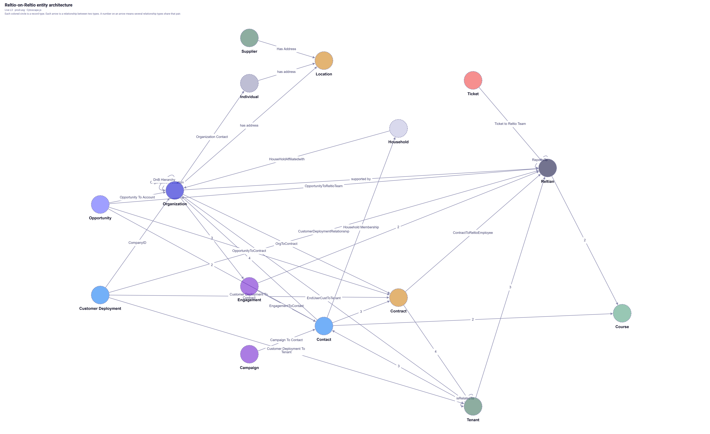
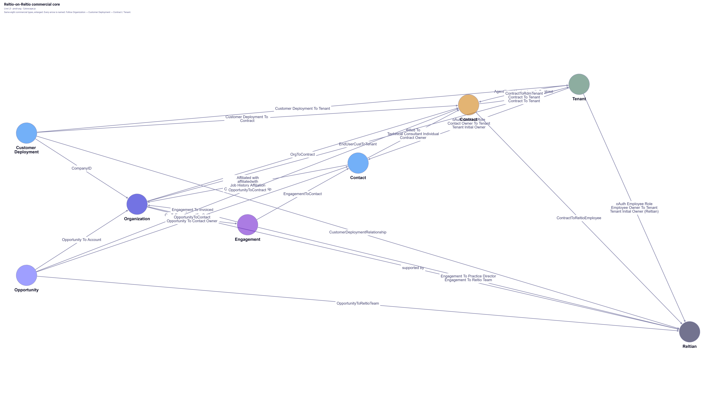
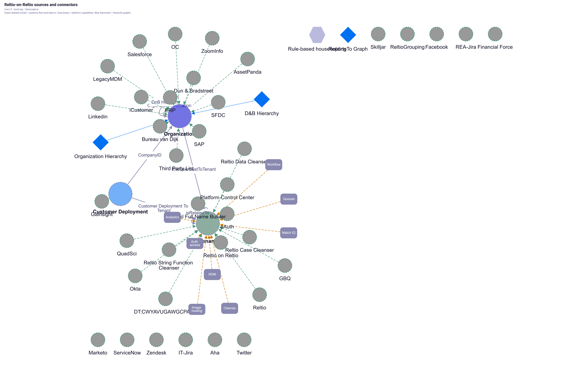

How Reltio uses Reltio Data Cloud to master its own customers, deployments, contracts, and product tenants. Three Cytoscape pictures from the live configuration, with a plain-language read of each.
Reltio-on-Reltio (RoR) is Reltio’s production tenant of Reltio Data Cloud. It is not a SKU we sell. It is the graph account teams, Professional Services, Support, and Forge agents query when they need a trusted view of a customer.
Everyday words map to these record types:
OrganizationType = Customer for paying accounts)Employee)About 40,000 organization profiles exist; on the order of 200 are paying customers.
This is the full L3 entity graph: 15 colored circles and the relationships between them. Sources, connectors, and capabilities are not on this picture — they are Figure 3.

Start at the big hubs, not at the edges.
CompanyID points back to Organization. Other arrows go forward to Tenant, Contract, and Reltian.Faded / dashed circles (Individual, Household, Supplier, Campaign) are abstract types. They complete the model but are rarely queried day to day.
One path: Salesforce account → Organization. Deal closes → Contract. Go-live → Customer Deployment (with nested tenants). Support case → Ticket. Identity always starts at Organization or Customer Deployment, never at a raw tenant ID.
Most questions only need eight types. This is that subgraph, laid out left-to-right so each relationship name is readable.

Read left to right. Each arrow is one named relationship (several names stacked means several types between the same pair).
Two walks, depending on the question:
Opportunity feeds Organization and Contract. Engagement is PS delivery. Contact is customer people. Reltian is the internal team.
tenants_report. Usage vs entitlement (CP / RSU / API) is BigQuery EDW, not RoR MCP.
| Circle in the picture | Type id | Plain meaning |
|---|---|---|
| Organization | Organization | The account. Use OrganizationType to pick Customer / Prospect / Partner. |
| Customer Deployment | CustomerDeployment | One deployment: use case, ARR, nested tenants, Zendesk, CTA. |
| Contract | Contract | What they bought: dates, ACV, product entitlements. |
| Tenant | Tenant | The instance they run, plus connector and capability flags. |
| Opportunity | Opportunity | Pipeline. |
| Engagement | Engagement | Professional Services work. |
| Reltian | Employee | Reltio people on the account. |
| Contact | Contact | Customer-side people. |
This picture is the integration layer around Organization, Customer Deployment, and Tenant. It answers “what feeds RoR, and what can that Tenant do?”

Connector flags (Salesforce, BigQuery, Reltio Integration Hub, and the rest) sit on Tenant. They are listed in the table below — they are not drawn as orange boxes on this picture.
| Connector / product | Flag on Tenant |
|---|---|
| Salesforce connector | SFDC_enable |
| D&B connector | DNB_CONNECTOR_enable |
| BigQuery connector | BIGQUERY_CONNECTOR_enable |
| Snowflake connector | SNOWFLAKE_CONNECTOR_enable |
| Reltio Integration Hub | RIH_enable |
| Reltio MCP Server | MCP_enabled |
| Reltio AgentFlow | agentFlow_enable |
| DEA data tenant | DT_DEA_enable |
| NPI data tenant | DT_NPI_enable |
| Category | Sources (37) |
|---|---|
| CRM / CS / product | Salesforce, SFDC, Marketo, Gainsight, Aha, iCustomer |
| Support | Zendesk, IT-Jira, REA-Jira, ServiceNow |
| Finance / ERP | FinancialForce, QuadSci, ERP, SAP |
| Identity | oAuth, Okta |
| Enrichment | D&B, BvD, ZoomInfo, LinkedIn |
| Social | Facebook, Twitter |
| Analytics | GBQ, PCC |
| Enablement / ops | Skilljar, AssetPanda, OC |
| Platform / cleanse | Reltio, RoR, ReltioGrouping, cleansers, FullNameBuilder, DT_B2B |
| Legacy | LegacyMDM, ThirdPartyList |
Interactive Cytoscape (zoom, filter, click): assets/ontology-builder/ror-architecture.html.